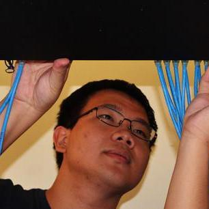

I am a Member of Technical Staff at the Microsoft AI Superintelligence Team. Before that, I was a Principal Software Research Architect at NVIDIA and a Senior Researcher at Microsoft Research Redmond.
I received my Ph.D. and B.E. from Hong Kong University of Science and Technology and Shanghai Jiao Tong University, respectively.
I have been working on computer networking, with a special focus on data center networking, for over a decade — and today my attention has shifted to AI networking. I see myself as a fusion of a software engineer and a network plumber — don't be misled by my publication list. I have deep, hands-on experience building and operating production networks at hyperscale, and I hold network quality to an almost obsessive standard. One of my favorite pastimes is stress-testing NICs and switches to find where they break.
Beyond networking, I am genuinely curious about AI — though I'll admit I'm still very much in the early stages of learning. I am also increasingly obsessed with using AI agents to improve both work and life efficiency.
See my full list of publications →